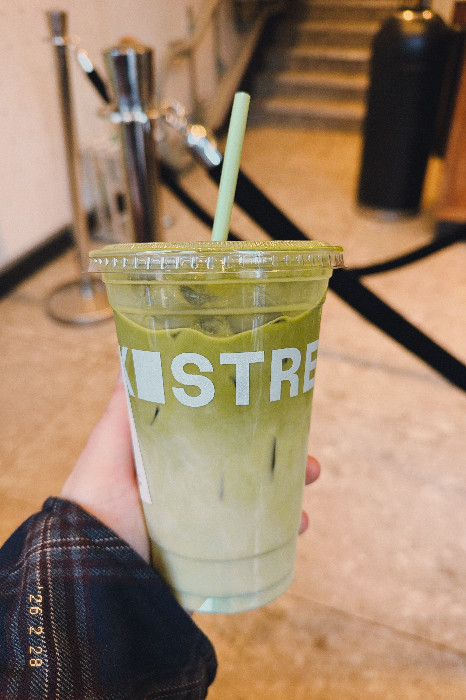
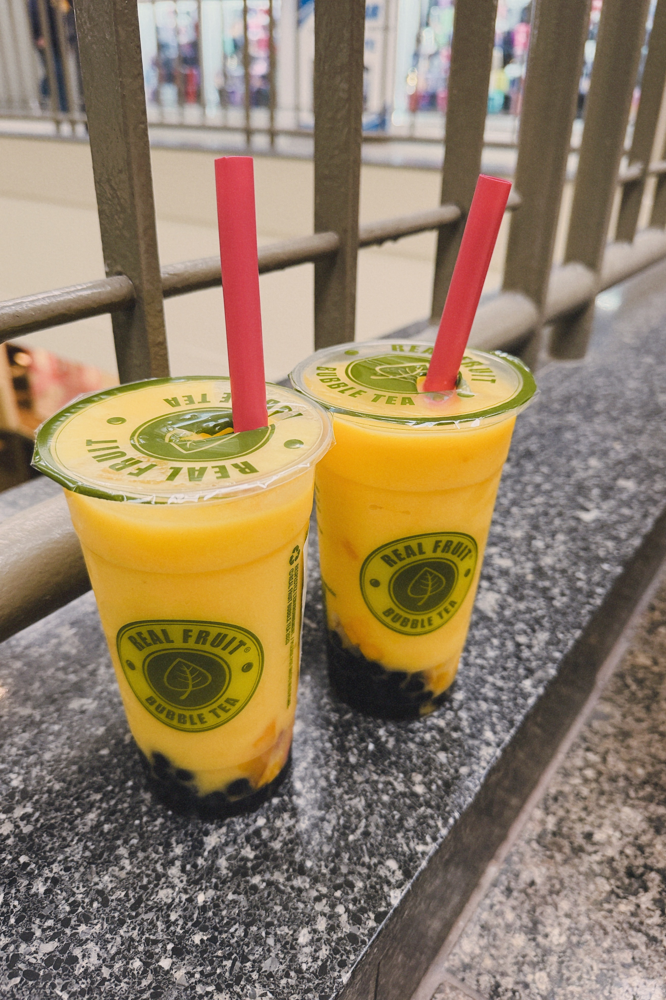
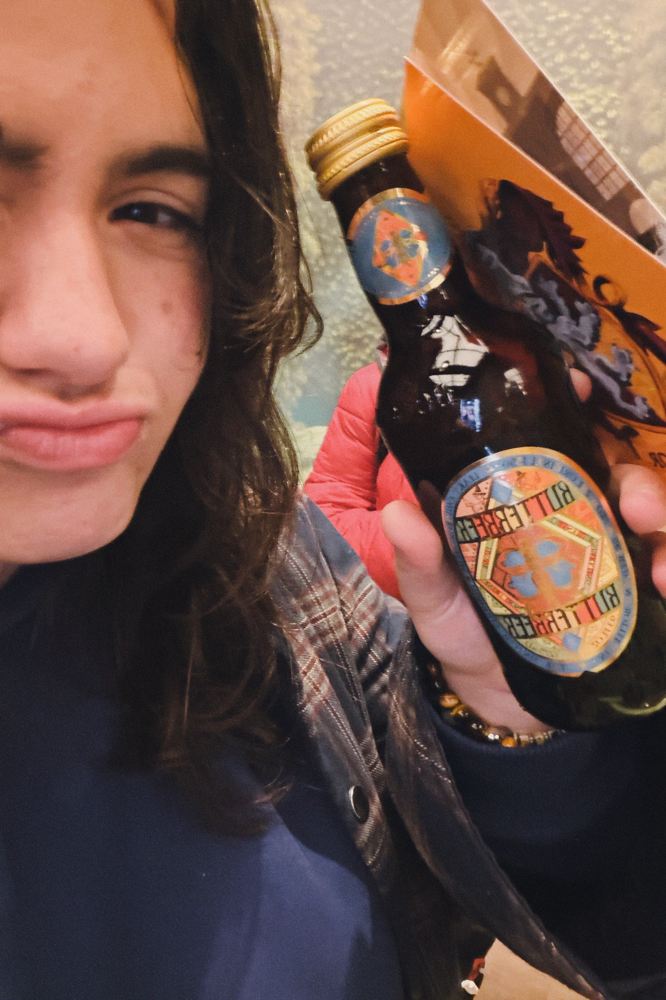

Blank Street Earl Grey Matcha latte
SOOOoo goood I LOVE BLANK STREET

Mitzu matcha sundae
Sooooo yummy there was ice cream and it was just an amazing latte/sundae its on Newberry st in Boston

Iced Blondie Matcha Latte
SOOOOO GOOD BLANK STREET MATCHA>>>>

Cherry Coke Matcha
Rating: 1000000/5
I'm joking it was terrible and meant as april fools joke. It taste sooo bad!
Rating: -5/5
Hokkaido Milk Tea
Rating: 5/5
It was sooo good I got it 50% sweet which made it perfect But I still probably will get less sweet next time but the flavor was amazing. Its a Japanese Black Tea with a nice sweet honey or brown suggar taste. It was creamy and rich.
Mango Sago
Rating: 4/5
It was light and refreshing!

Dorm Matcha
Rating: 3.5/5
Its nice and refreshing and light. No complaints

Iced Brown Sugar Oatmilk Shaken Espresso
Rating: 5/5
It was amazing. Its sweet and creamy. Its the perfect afternoon pick me up. I have so much love for this latte.

Fresh mango smoothie with tapioca pearls
4.5/5
It's very sweet and refreshing and overall I really enjoyed it. I watched them make it which was very cool within itself.

Butterbeer from Harry Potter World
Rating: 2/5
Overhyped for real it didnt taste that good